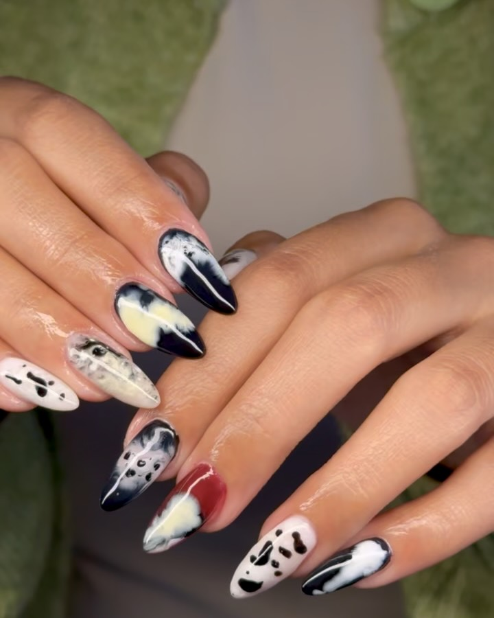
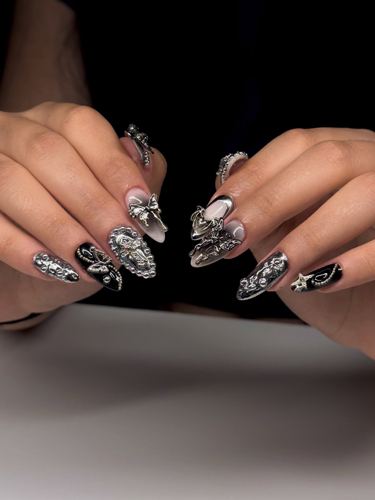

01 / BASEFUNDAMENTOS
Estrutura e alongamento
Fundamentos de preparação, construção, acabamento e manutenção para um resultado bem executado.
- Preparação e estrutura
- Curvatura e acabamento
- Rotina de manutenção
Formação em unhas e Nail Art para desenvolver sua técnica, apurar o olhar e construir um trabalho com a sua assinatura.
VER CURSOSFORMAÇÃO PROFISSIONAL
Escolha o tema que combina com o seu momento. Conteúdo, formato, carga horária e próximas turmas são confirmados com a equipe.

01 / BASEFUNDAMENTOS
Fundamentos de preparação, construção, acabamento e manutenção para um resultado bem executado.
 02 / CRIAÇÃO
02 / CRIAÇÃO
NAIL ART
Explore composição, cor e relevo para desenvolver desenhos autorais e acabamentos criativos.

03 / EVOLUÇÃOAPERFEIÇOAMENTO
Um percurso para revisar processos, aprimorar o acabamento e ganhar mais consistência no atendimento.
 04 / ACOMPANHAMENTO
04 / ACOMPANHAMENTO
MENTORIA E PRÁTICA
Converse com a equipe sobre um acompanhamento direcionado à sua experiência e aos seus objetivos.
O JEITO BBY MILA DE ENSINAR
Aprender também é descobrir como transformar conhecimento em um trabalho que tenha a sua identidade.
CONHEÇA A CAMILAEntenda o porquê de cada etapa para trabalhar com mais segurança e consistência.
Exercite os fundamentos e aprimore os detalhes que fazem diferença no resultado.
Desenvolva repertório para criar trabalhos que valorizem o seu olhar e o de cada cliente.
DÚVIDAS FREQUENTES
Quer entender qual formação combina com você? Fale com a equipe e conte um pouco sobre sua experiência.
CONVERSAR PELO WHATSAPPOs pré-requisitos variam conforme a formação. Conte à equipe qual é o seu nível para receber a orientação adequada.
Turmas, formato, carga horária e investimento são informados pela equipe de acordo com a formação escolhida.
A lista de materiais depende do conteúdo e do formato da turma. Você recebe as orientações antes da formação.
Confirme com a equipe se há certificado para a formação específica que você deseja fazer.